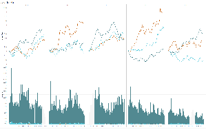
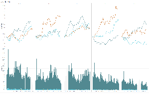

Modern problems require modern solutions. ATLAS enables you to utilize data to help your business compete and grow.
Gain valuable insight into the needs of your current and potential customers with visual analytics that employ large datasets to enhance your knowledge.
Technology is constantly evolving and ATLAS is here to help your business realize its full potential by keeping up with the pace of technological advances
that enable businesses to make better decisions.
If you aren't ahead of the competition then you're falling behind. ATLAS is here to help your business evolve and carry you into the future.
 


Font-family:
Carter One
Colors:
Font Color Header, Main, and Links:
#000048
Font Color Small Footer Text:
#000000
Background-color Header:
#ADD8E6 and
#FFFFFF (solid white and gradient)
Background-color Body Default:
#ADD8E6
Background-color Body Alternates to:
#ADD8E6 and
#FFFFFF (gradient)
Background-color Main:
#FFFFFF
Background-color Footer:
#ADD8E6 and
#FFFFFF (gradient)
Shadow Color:
#000048